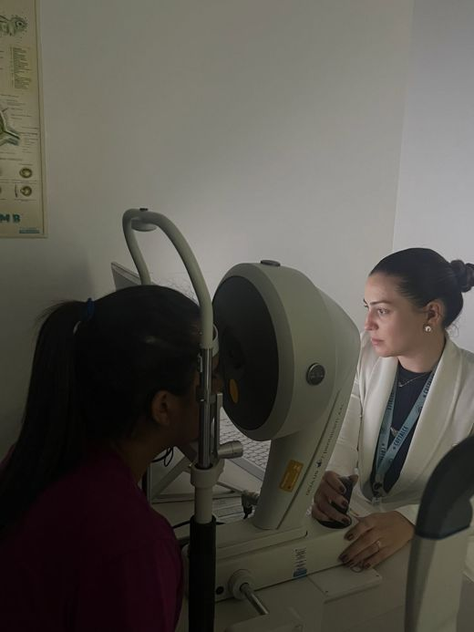
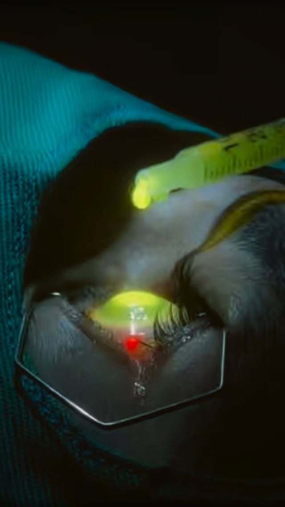
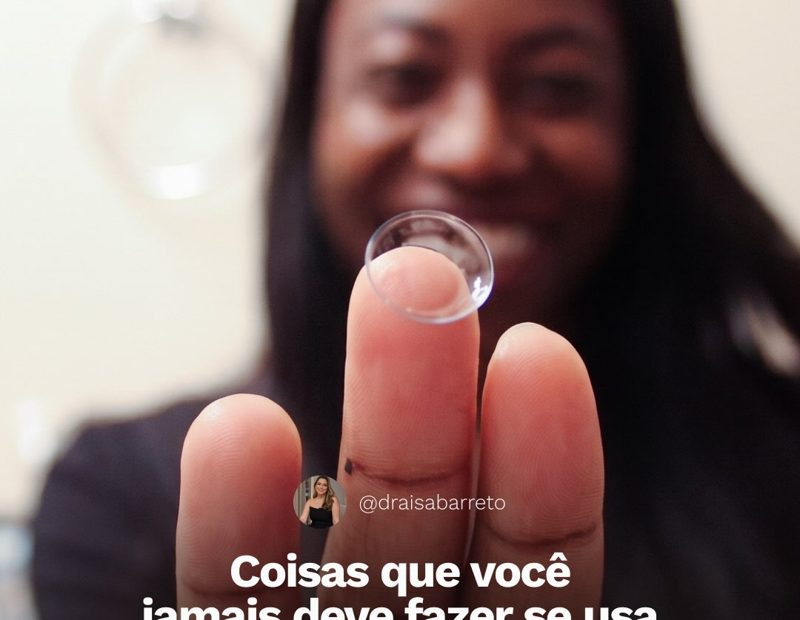
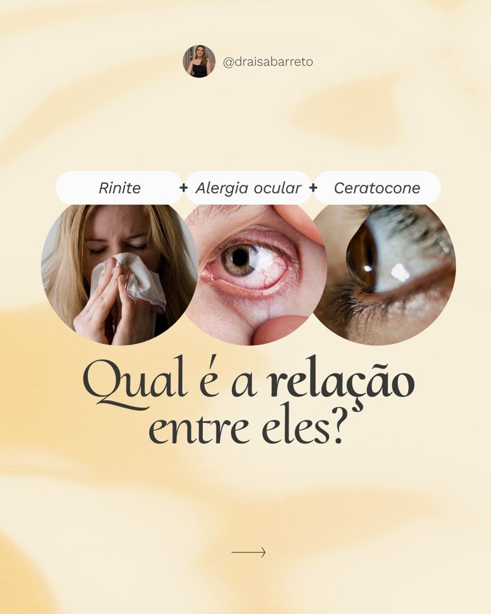
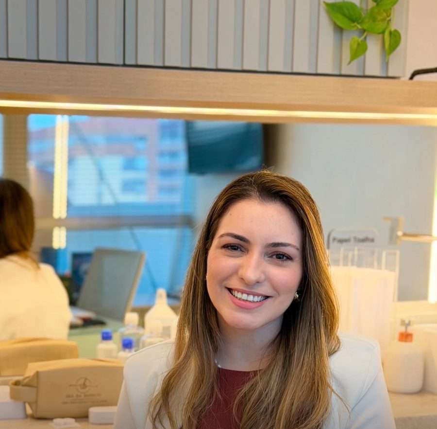

Dra. Isa Barreto
Oftalmologista, especialista em córnea. Descomplicando o ceratocone.
O olho, por dentro da córnea
Toque em um ponto e veja como cada parte do olho é cuidada.




Córnea e ceratocone
A córnea é a camada transparente da frente do olho. No ceratocone ela afina e ganha uma curvatura em forma de cone, o que embaça e distorce a visão. Dois pacientes com o mesmo diagnóstico podem ter córneas diferentes, por isso o plano é sempre individual.
Perguntar no WhatsAppComo o ceratocone distorce a imagem
1 em cada 337 pessoas pode ter ceratocone e nem imaginar.Dado citado pela Dra. Isa em seu Instagram.
Formação em córnea, do consultório ao transplante
- MedicinaUniversidade Federal do Ceará
- Residência em OftalmologiaHospital Geral de Fortaleza
- Residência em Transplante de CórneaHospital Geral de Fortaleza
- Fellowship em CórneaHospital Geral de Fortaleza
- Mestrado em TransplantesUniversidade Estadual do Ceará
No ceratocone, não existe receita pronta. Existe uma córnea que precisa ser entendida individualmente.Dra. Isa Barreto
CRM 15107 | RQE 9093
Ceratocone sem medo, com informação
O que é ceratocone?
É uma condição em que a córnea afina e ganha uma curvatura em forma de cone. A visão fica embaçada e distorcida, e o grau muda com frequência.
Ceratocone significa perder a visão?
Não necessariamente. Com diagnóstico e acompanhamento, existem tratamentos para estabilizar a córnea e melhorar a qualidade da visão.
Todo paciente precisa do mesmo tratamento?
Não. Localização do cone, espessura da córnea, idade e progressão mudam a decisão. Até os dois olhos da mesma pessoa podem ser diferentes.
Para que serve o crosslinking?
O objetivo é frear a evolução do ceratocone, não melhorar o grau. A indicação é feita em consulta, avaliando se existe progressão.
Todo caso precisa de transplante?
Não. Hoje é possível evitar o transplante de córnea em muitos pacientes, com diagnóstico precoce e acompanhamento.
Conteúdo para entender seus olhos
Ver todos os postsFortaleza e Sobral

Fortaleza
OftaClinic. Shopping Pátio Dom Luís, Torre Corporate, Sala 1305.
Sobral
Clínica Dr. José Nilson. Rua General Tibúrcio, 300, Centro.
Clínica Equilibrium. Av. Monsenhor Aluísio Pinto, 300, Cameron Tower, 6º andar.
Agende sua consulta
WhatsAppFale com a Dra. IsaCRM 15107 | RQE 9093